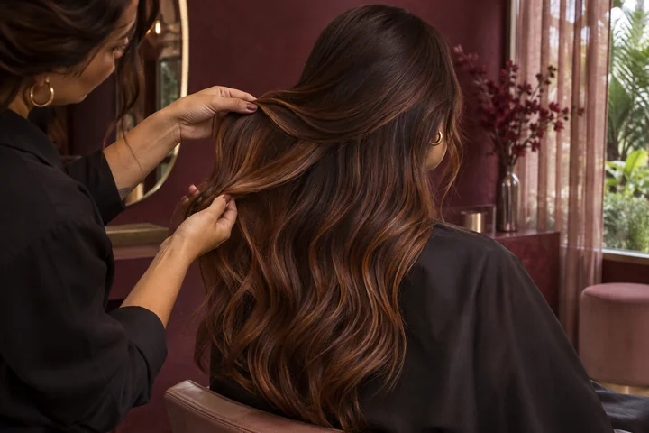
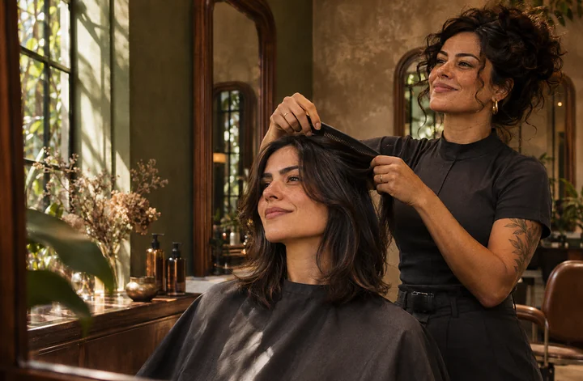
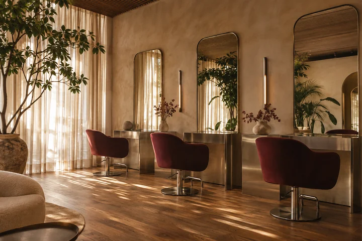

Coloração
Para retocar a cor, discutir uma mudança ou entender o que ela pede de manutenção.
Escolher coloração
Traga uma referência e conte o que já fez no cabelo. A Bellezza usa essas informações para conversar sobre o resultado e a manutenção.
Conversar sobre a corPara retocar a cor, discutir uma mudança ou entender o que ela pede de manutenção.
Escolher coloração
Para manter o comprimento, mudar o formato ou encontrar um corte mais fácil de arrumar.
Escolher serviço
Conte a ocasião e a data para a equipe conversar sobre o penteado e a disponibilidade.
Escolher serviço
Bellezza · estações de corte, cor e finalização.
A referência ajuda a explicar a ideia. Para estimar tempo e valor, o salão também conversa sobre o cabelo atual e o que já foi feito.
Sim. Selecione Coloração e escolha Retocar a cor. No retorno, conte quando fez a última coloração.
O período escolhido é para o retorno do salão. O horário da sessão é combinado depois.
Comece dizendo se quer retocar, mudar a cor ou esclarecer dúvidas.
Em um atendimento real, o salão conferiria a disponibilidade e combinaria o horário com você.